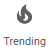
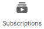

<div id="sidebar-list">
    <span class="span-icon" (click)="goTo('home')"></span>
    <span class="span-icon" (click)="goTo('trending')"></span>
    <span class="span-subscription" (click)="goTo('subscriptions')"></span>
    <span class="span-icon" *ngIf='user' (click)="myChannel()">
        <i class="fa fa-user-circle" aria-hidden="true"></i>
        <p>My Channel</p>
    </span>
</div>
